每行一个路径，可一次添加多个文件夹。每个文件夹单独保存星级和选片规则，添加后在左栏切换。
索引在后台进行，可继续处理其他文件夹。
正在检查连接…
首次使用：安装桥接插件，在 LR「文件 → 增效工具管理器」加载 FramekeepBridge.lrplugin；随后运行「图库 → 增效工具额外选项 → 连接末帧工作台」。照片须已导入 LR。写星前 LR 会预览匹配结果。
保留 AI 助手连接配置，供后续功能使用。配置校验只读取本机文件，不发起模型请求。
配置文件支持 HTTP/HTTPS 地址、API 密钥和模型标识。密钥仅在本机读取，不显示在界面中。
选片清单可通过 Lightroom 桥接插件同步星级。
网格单击定位，双击进入单张，按 Esc 返回网格并定位当前照片。网格和列表按住 Shift 滑过照片连续勾选，从已勾选照片起滑则连续取消；松开结束，Esc 取消，Ctrl+Z 整批撤销。单张与对比图支持滚轮缩放，放大后用左键或按住中键拖拽平移，放大后点击照片恢复全图。可在“设置 → 预览显示”同时设置星标位置和缩放滑杆位置，均可选择四角或隐藏；星标默认左下角，滑杆默认隐藏，设置即时生效并记忆，靠近时自动避让。隐藏星标后仍可用数字键标星。同页可用两个透明度滑杆分别调整星标与缩放滑杆（0%–100%，数值越大越透明），即时生效并自动记忆。启用缩放滑杆后移入中央照片区域，半透明滑块在网格/列表中调整缩略图大小，在单张/对比中调整大图缩放（100%–1600%，100% 为适应窗口）；加减按钮也随视图切换，滚轮缩放及切图复位同步更新百分比。也可在缩略图区按 Ctrl + 滚轮调整缩略图。正式工作台自动保存评级，刷新或重启后恢复；可用 Ctrl+Z 撤销当前页面的操作。

MOMENTS, KEPT.
正在打开工作台…
叠帧 · 对焦 · 留下最后一帧